Elige la memoria
Identifica tu USB por modelo y capacidad. La lectura inicial también recoge errores y demoras.

REVIVORevivo busca archivos en memorias dañadas o que aparecen como RAW. Trabaja sobre una copia, te ayuda a revisar lo encontrado y guarda tu selección en la computadora.
Sin suscripción · Aportaciones voluntarias · Archivos localesSe lee la memoria y se crea una copia en otro disco para trabajar sobre ella.
Deja de guardar cosas en esa memoria. Revivo crea una imagen en otro disco y busca sobre ella. Necesitarás espacio libre para la copia y los archivos recuperados.
Identifica tu USB por modelo y capacidad. La lectura inicial también recoge errores y demoras.
Consulta imágenes, PDF y extractos de documentos. Distingue lo comprobado, los avisos y los fragmentos.
Selecciona uno, varios o todos los archivos. Expórtalos por tipo a una carpeta con el nombre que elijas.
La versión beta 0.9.4 está en pruebas de instalación. La descarga pública se habilitará cuando termine esa revisión.
Windows 11 · Procesador x64 · Disco interno con espacio libre
La lectura física puede solicitar permiso de administrador.
Sesiones nuevas al abrir.
Validación integrada.
Selección y guardado por lotes.
Puede tardar desde minutos hasta varias horas. Influyen la capacidad de la USB, su velocidad, los errores de lectura y la cantidad de archivos. REVIVO primero crea una copia, después busca archivos y prepara las vistas previas. Durante la copia, la aplicación estima el tiempo restante según la velocidad observada: esa cifra puede cambiar y no incluye las etapas siguientes. Si la lectura es irregular, puede no haber una estimación fiable. Mantén la USB conectada; si necesitas interrumpir el proceso, utiliza Detener y espera la confirmación.
No hay garantía. La sobrescritura, la fragmentación y el daño físico pueden impedirlo. Que un archivo supere una comprobación estructural tampoco prueba que sea idéntico al original perdido.
El proceso de recuperación y las vistas previas de Revivo se realizan localmente. Esta página no recibe tus archivos.
Cuando sobrevive suficiente información del sistema de archivos, pueden recuperarse rutas y nombres. En la búsqueda por firmas puede perderse esa información; el guardado permite organizar por tipo.
No. El diagnóstico de lectura y la evaluación de estructura no reparan chips ni garantizan que la memoria sea confiable para reutilizarla.
No. Las aportaciones son voluntarias y no desbloquean resultados ni garantizan una recuperación.
Cuéntanos qué funcionó, qué falló o qué cambiarías. No necesitas crear una cuenta.
Las aportaciones pueden apoyar las pruebas con más memorias, las mejoras del programa y su distribución. Usarlo y compartir tus observaciones también cuenta.
Estamos preparando el enlace de apoyo. Por ahora, esta página no recibe pagos.